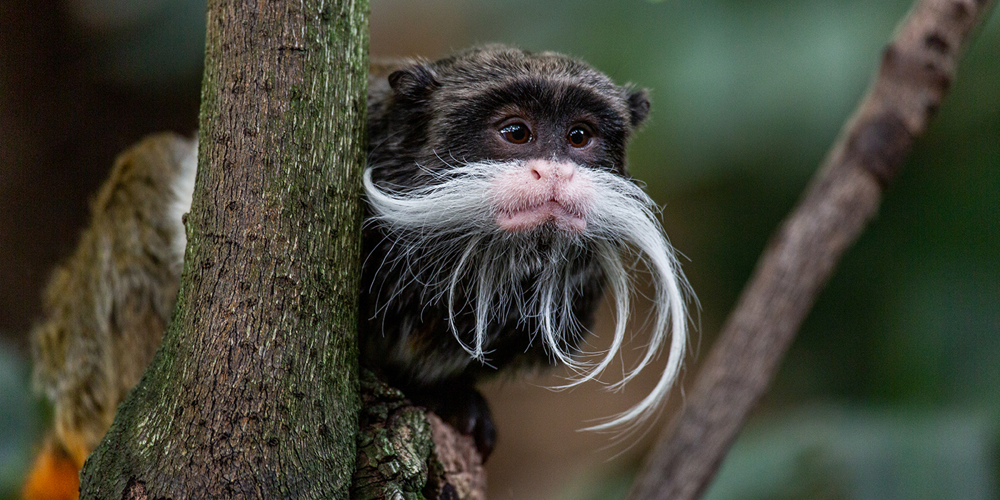
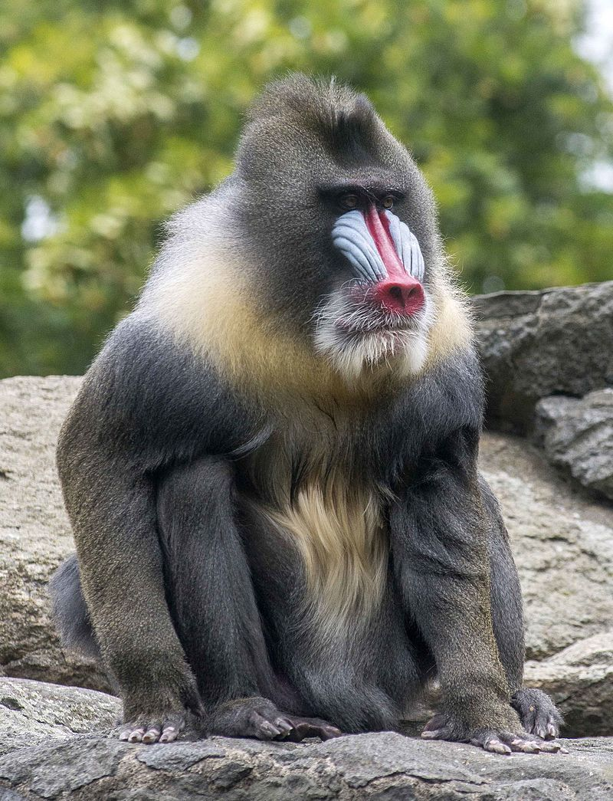

Pictured above is the Macaca radiata, a species of macaque native to India's Western Ghat Mountains. They are very social creatures, living in large groups with dynamic social hierarchical classes.
This next fellow is known as the Emperor Tamarin (Saguinus imperator), native to the southwest Amazon Basin in Brazil, Peru, and Bolivia. This species is quite small, measuring just 9-10 inches tall and weighing in at a single pound. Interestingly, these monkeys mostly give birth to twins. Single births and triplets are known to happen as well, but twin births are actually more common than either of those. They live in small groups with usually 4-20 members led by an elderly female with a specific territory in which they live. The species' trademark mustache is believed to be used as an identifier to help members of the species recognize each other.
Here we see the Mandrill (Mandrillus sphinx), the largest species of "Old World" monkeys, with males being as tall as 110 cm and as heavy as 33 kg. Females, however, are usually only around two-thirds the height and half the weight of males when fully grown. Mandrills are famous for their brightly colored faces, including red lips and noses and blue/purple ridges surrounding the nose.
Unfortunately, many species of monkeys are currently at risk of extinction.
These species are classified as follows, from lowest risk of extinction to highest:
| Species | Scientific Name | Habitat | Status |
|---|---|---|---|
| Arunachal Macaque | Macaca munzala | Arunachal Pradesh, India | EN |
| Barbara Brown's Titi | Callicebus barbarabrownae | Caatinga, Brazil | CR |
| Barbary Macaque | Macaca sylvanus | Algeria, Morocco, and Gibraltar | EN |
| Black Bearded Saki | Chiropotes satanas | Brazilian Amazon | CR |
| Black Lion Tamarin | Leontopithecus chrysopygus | Sao Paulo, Brazil | EN |
Sources
https://animaldiversity.org/accounts/Macaca_radiata/